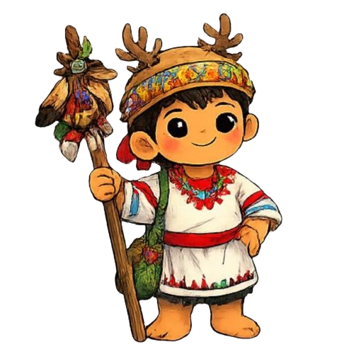

Relación con otros pueblos
Los tepehuanos se relacionan principalmente con otros pueblos originarios de la sierra madre occidental a través de alianzas culturales,comerciales y parentescos lingüísticos.

Los tepehuanos se relacionan principalmente con otros pueblos originarios de la sierra madre occidental a través de alianzas culturales,comerciales y parentescos lingüísticos.